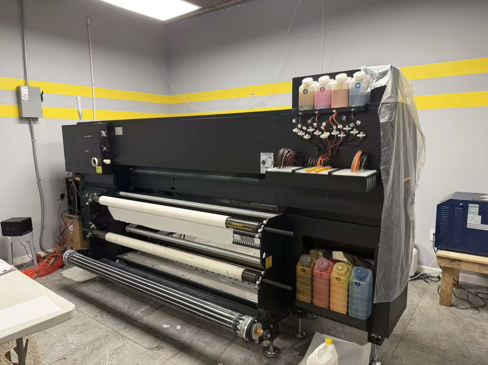
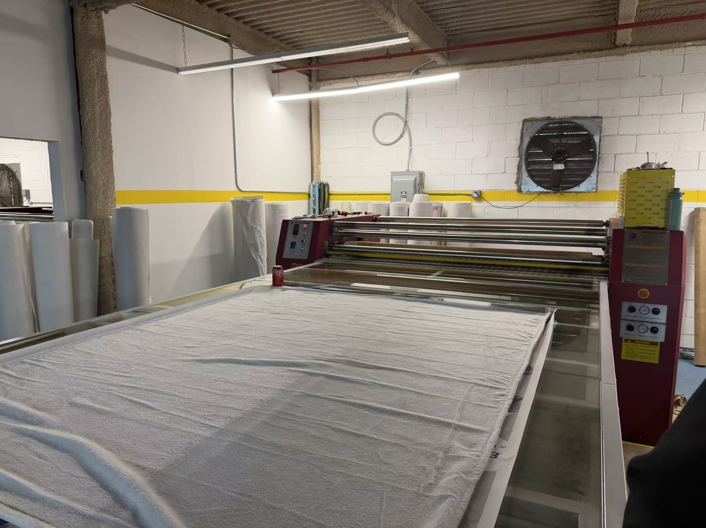

Support for both small batch and large-volume orders.

Equipped with professional-grade digital printers for duvet covers and sheets. These systems require precise color-profile calibration and mechanical synchronization to maintain high-resolution output.

Thermal engineering is at the core of our bedding production. These roll-to-roll calender systems ensure permanent ink bonding and a luxury hand-feel on premium textiles.
The result of our automated workflow: premium bedding sets that meet international quality standards, produced and fulfilled locally in the USA.
Our production lines utilize IoT-based monitoring and SCADA systems to track efficiency and quality. This complex technical architecture requires specialized engineering support to optimize throughput and system reliability.